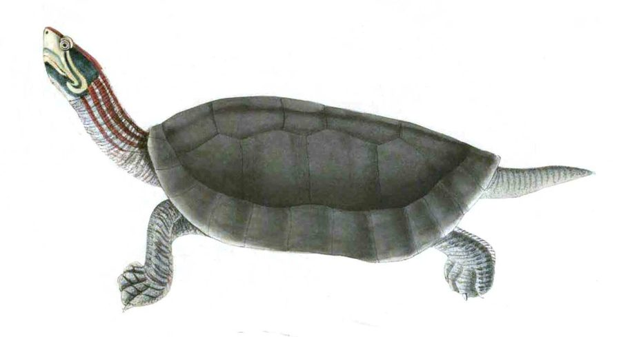

रेड-क्राउन्ड रूफ़्ड कछुआRed-crowned Roofed Turtle
Batagur kachuga · Geoemydidae · REP-0056

- Scientific name वैज्ञानिक नाम
- Batagur kachuga (Gray, 1831)
- Family कुल
- Geoemydidae
- Hindi हिंदी
- रेड-क्राउन्ड रूफ़्ड कछुआ
- Local names स्थानीय नाम
- kachuga, lal pagri kachhua
- Status here यहाँ की स्थिति
- native
- Movement आवागमन
- Resident, here all year
- Known from कहाँ दर्ज
- Others have published records elsewhere in Uttar Pradesh, none yet from this region उत्तर प्रदेश में अन्यत्र दूसरों के अभिलेख, इस क्षेत्र से अभी नहीं
- IUCN IUCN
- CR
- Review समीक्षा
- not yet reviewed
When to look कब देखें
Present all year. साल भर मौजूद।
Tell it apart from इनसे अलग पहचानें
रेड-क्राउन्ड रूफ़्ड कछुआ / Red-crowned Roofed Turtle
Batagur kachuga (Gray, 1831) — Geoemydidae
रेड-क्राउन्ड रूफ़्ड कछुआ — गंगा और उसकी बड़ी सहायक नदियों में रहने वाला एक अत्यंत दुर्लभ और विशालकाय नदी कछुआ। स्मिथ (1931) के अनुसार इसके खोल की लंबाई 390 मिमी तक होती है। वयस्क नर के सिर पर चमकीला लाल रंग और गर्दन पर लाल-भूरे रंग की धारियां होती हैं। चौधरी के अनुसार यह मार्च के महीने में गंगा के रेतीले किनारों पर अंडे देता है। वन्यजीव (संरक्षण) अधिनियम के तहत यह एक पूर्ण संरक्षित प्रजाति है।
Quick Identification त्वरित पहचान
| Feature | Description |
|---|---|
| Build & Size | Large freshwater river turtle; length of shell 390, breadth 295, depth 165 mm (Smith 1931) |
| Carapace | Carapace depressed, unicarinate, the keel interrupted (Smith 1931) |
| Shell Colour | Shell olivaceous or brownish above, yellowish below (Smith 1931) |
| Neck Markings | Neck pale brown, with seven red or reddish-brown longitudinal stripes (Smith 1931) |
| Head Pattern | Sides of head bluish; top of male head brilliant red (Smith 1931) |
Field tip: Look for a large river turtle with seven red or reddish-brown stripes on a pale brown neck and bluish sides to the head; according to Anderson the top of the male's head is brilliant red, perhaps only seasonally (Smith 1931, p. 132).
हिंदी:
यह एक बड़ा नदी कछुआ है। इसकी हल्की भूरी गर्दन पर सात लाल या लाल-भूरी धारियां और सिर के किनारे नीले होते हैं; एंडरसन के अनुसार नर के सिर का ऊपरी भाग चमकीला लाल होता है, संभवतः केवल किसी ऋतु में (स्मिथ 1931)।
Morphology आकारिकी
Measurements given by Smith (1931, p. 132) for Kachuga kachuga:
| Measurement | Range |
|---|---|
| Length of shell | 390 mm (Smith 1931) |
| Breadth of shell | 295 mm (Smith 1931) |
| Depth of shell | 165 mm (Smith 1931) |
Smith (1931, p. 131) described the shell under entry 30 (Kachuga kachuga): "Carapace depressed, unicarinate, the keel interrupted, most prominent upon the second and third vertebral shields, where it terminates in a pointed knob in the young which disappears gradually with age ; posterior margin crenulated in the young."
Smith (1931, p. 132) described the coloration: "Shell olivaceous or brownish above, yellowish below. Neck pale brown, with seven red or reddish-brown longitudinal stripes ; sides of the head bluish ; throat with a pair of oblong red or yellow spots. According to Anderson the top of the male head is brilliant red and the female has no red streaks upon the neck; this condition may be a seasonal one only."
Vocalisations
Not available in consulted sources.
हिंदी:
स्मिथ (1931) के अनुसार खोल की लंबाई 390 मिमी, चौड़ाई 295 मिमी और गहराई 165 मिमी होती है। नर मादा से छोटे होते हैं। खोल का ऊपरी हिस्सा जैतून या भूरे रंग का और निचला हिस्सा पीला होता है। परामर्शित स्रोतों में आवाजों का कोई विवरण उपलब्ध नहीं है।
Behaviour & Ecology व्यवहार और पारिस्थितिकी
Not available in consulted sources.
हिंदी:
परामर्शित ऐतिहासिक स्रोतों में इसके व्यवहार का विस्तृत विवरण उपलब्ध नहीं है।
Life Cycle / Phenology जीवन चक्र
Smith (1931, p. 132) cited Chaudhuri regarding nesting: "Chaudhuri states that it deposits its eggs in March, in sand on the banks of the Ganges."
हिंदी:
स्मिथ (1931) ने चौधरी के हवाले से दर्ज किया है कि यह मार्च के महीने में गंगा नदी के रेतीले किनारों पर अंडे देती है।
Host Plants or Prey आहार
Not available in consulted sources.
हिंदी:
परामर्शित स्रोतों में इसके आहार का विशिष्ट विवरण उपलब्ध नहीं है।
Predators / Natural Enemies शत्रु
Not available in consulted sources.
हिंदी:
परामर्शित स्रोतों में प्राकृतिक शत्रुओं का कोई विवरण उपलब्ध नहीं है।
Agricultural / Human Relevance कृषि प्रासंगिकता
Conservation legal status: Protected under the Wildlife (Protection) Act, 1972.
हिंदी:
यह वन्यजीव (संरक्षण) अधिनियम, 1972 के तहत पूरी तरह से संरक्षित है।
Expected Locally स्थानीय रूप से अपेक्षित
Not a field record. Written from published accounts for eastern Uttar Pradesh. No confirmed local sighting yet — if you have seen it, that is what the atlas needs.
अभी तक स्थानीय पुष्टि नहीं। यह विवरण प्रकाशित स्रोतों से है, किसी अवलोकन से नहीं।
GBIF holds published records from the wider plain: one iNaturalist record, October 2020 (observation 347198917); its coordinates are blurred across district boundaries and iNaturalist names only "Uttar Pradesh". Name no district. A photograph with place and date would constitute a first record for the atlas.
हिंदी:
31 अक्टूबर 2020 का एक iNaturalist रिकॉर्ड (347198917) है, जिसके निर्देशांक लगभग तीस किलोमीटर धुंधले किए गए हैं और iNaturalist केवल 'उत्तर प्रदेश' का उल्लेख करता है। किसी विशिष्ट जिले का नाम नहीं है। बस्ती या अयोध्या से कोई रिकॉर्ड नहीं है। स्थान और तारीख के साथ एक फोटो एटलस के लिए पहला रिकॉर्ड होगी।
Distribution वितरण
Global range: Smith (1931, p. 132) recorded: "The Gangetic river system of Bengal, Nepal, and the United Provinces. Its occurrence in the Kistna and Godavari Rivers needs confirmation."
In India: Recorded from the Gangetic river system as quoted above.
In Uttar Pradesh: One iNaturalist record, October 2020 (observation 347198917); coordinates are blurred across district boundaries and iNaturalist gives only "Uttar Pradesh".
In Basti district / eastern UP: GBIF holds no record from Basti or Ayodhya.
हिंदी:
स्मिथ (1931) के अनुसार यह बंगाल, नेपाल और संयुक्त प्रांत (उत्तर प्रदेश) की गंगा नदी प्रणाली में पाया जाता था। बस्ती या अयोध्या से इसका कोई प्रमाणित स्थानीय रिकॉर्ड नहीं है।
Research Questions शोध प्रश्न
- What historical records document the distribution of Batagur kachuga in the Ganges and northern tributaries? / गंगा और उसकी उत्तरी सहायक नदियों में इस कछुए के वितरण को कौन से ऐतिहासिक रिकॉर्ड प्रमाणित करते हैं?
- What survey protocols are appropriate for detecting large river turtles without disturbing riverine habitats? / नदी के आवास को नुकसान पहुंचाए बिना बड़े कछुओं का पता लगाने के लिए कौन से सर्वेक्षण प्रोटोकॉल उपयुक्त हैं?
- What sandbank characteristics along major Gangetic channels match Chaudhuri's historical nesting descriptions?
- How can community river watchers differentiate Batagur kachuga from sympatric Pangshura species?
- What historical museum specimens verify the eastern limits of the species in Uttar Pradesh?
हिंदी:
1. गंगा और उसकी उत्तरी सहायक नदियों में इस कछुए के वितरण को कौन से ऐतिहासिक रिकॉर्ड प्रमाणित करते हैं?
2. नदी के आवास को नुकसान पहुंचाए बिना बड़े कछुओं का पता लगाने के लिए कौन से सर्वेक्षण प्रोटोकॉल उपयुक्त हैं?
Similar Species मिलती-जुलती प्रजातियाँ
| Species | How to tell apart | हिंदी | |
|---|---|---|---|
| [[indian_roofed_turtle | Indian Roofed Turtle]] (Pangshura tecta) | Much smaller shell; distinct bright red or orange vertebral stripe; elevated spire keel | पचेरा |
| [[indian_tent_turtle | Indian Tent Turtle]] (Pangshura tentoria) | Smaller shell; prominent tent-like dorsal spire on third vertebral shield; pale pink plastron | इंडियन टेंट कछुआ |
| [[brown_roofed_turtle | Brown Roofed Turtle]] (Pangshura smithii) | Smaller shell; yellowish-brown carapace; dark brown blotch on underside | ब्राउन रूफ़्ड कछुआ |
| [[crowned_river_turtle | Crowned River Turtle]] (Hardella thurjii) | Large shell; head dark with distinctive orange or yellow stripes running through eyes | क्राउन्ड रिवर कछुआ |
| Kachuga dhongoka | Carapace depressed with interrupted keel; head with yellow stripes, lacking brilliant red crown | धोंगोका |
Field rule: Smith gives a shell 390 mm long, a pale brown neck with seven red or reddish-brown stripes, and, after Anderson, a brilliant red top to the male's head (Smith 1931, p. 132).
Taxonomy & Classification वर्गीकरण
Original description. Described by John Edward Gray in 1831 in Illustrations of Indian Zoology (vol. 1, pl. 74), under the basionym Emys kachuga, from northern India.
Subspecies. Monotypic. Smith (1931, p. 131) treats it as Kachuga kachuga. Modern authorities place it in the genus Batagur.
Family and order placement. Order Testudines, suborder Cryptodira, family Geoemydidae, genus Batagur.
Phylogenetic notes. Not available in consulted sources.
IUCN status rationale. Evaluated as Critically Endangered (CR) on the IUCN Red List (Praschag et al. 2019).
हिंदी:
जॉन एडवर्ड ग्रे ने 1831 में इसका वर्णन किया था। स्मिथ (1931) ने इसे 'कचुगा कचुगा' में रखा था। आधुनिक वर्गीकरण में इसे 'बाटागुर' जीनस में रखा गया है। आईयूसीएन द्वारा इसे 'अति संकटापन्न' (Critically Endangered) माना गया है।
Photo Gallery फोटो गैलरी
No photos yet — add field photos to media/species/red_crowned_roofed_turtle/ and run node scripts/sync_photos.js.
Photos needed आवश्यक फोटो
- [ ] Adult male showing red crown and neck striping (लाल सिर वाला वयस्क नर कछुआ)
- [ ] Basking individual on river sandbank (रेतीले तट पर धूप सेकता हुआ कछुआ)
References संदर्भ
- Gray, J. E. (1831). Illustrations of Indian Zoology. Vol. 1. Treuttel, Wurtz, Treuttel, Jun. and Richter, London, pl. 74 (as Emys kachuga).
- Smith, M. A. (1931). The Fauna of British India, Including Ceylon and Burma. Reptilia and Amphibia. Vol. I.—Loricata, Testudines. Taylor & Francis, London, pp. 131–132 (as Kachuga kachuga).
- Das, I. (2002). A Photographic Guide to Snakes and Other Reptiles of India. New Holland Publishers, London.
- Daniel, J. C. (2002). The Book of Indian Reptiles and Amphibians. Bombay Natural History Society, Oxford University Press, Mumbai.
- Praschag, P., Ahmed, M. F., Das, I. & Singh, S. (2019). Batagur kachuga. The IUCN Red List of Threatened Species 2019: e.T10949A152043133. doi:10.2305/IUCN.UK.2019-1.RLTS.T10949A152043133.en
- GBIF Occurrence Data — Batagur kachuga, India (2025).
Source file: species/fauna/reptiles/red_crowned_roofed_turtle.md